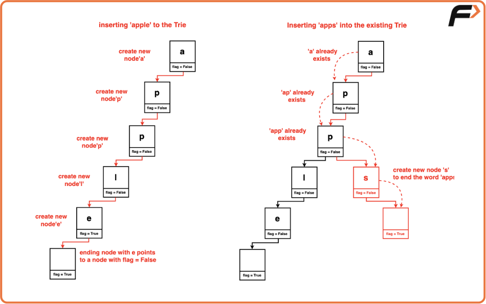
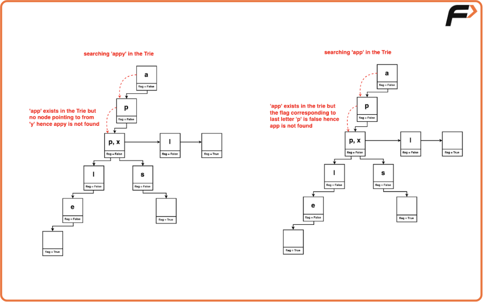
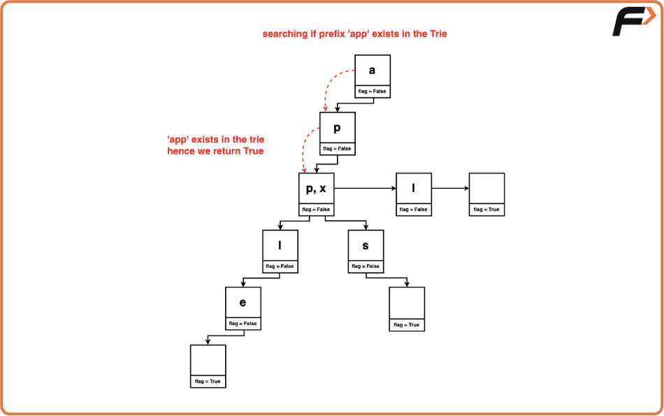

Implement Trie - 1
Problem Statement:
Implement the Trie class:
Trie(): Initializes the trie object.
void insert (String word): Inserts the string word into the trie.
boolean search (String word): Returns true if the string word is in the trie (i.e., was inserted before), and false otherwise.
boolean startsWith (String prefix): Returns true if there is a previously inserted string word that has the prefix prefix, and false otherwise.
Examples
Example 1:
Input:
["Trie", "insert", "search", "search", "startsWith", "insert", "search"]
[ [] , ["apple"], ["apple"], ["app"], ["app"], ["app"], ["app"] ]
Output:
[null, null, true, false, true, null, true]
Explanation:
- Trie trie = new Trie()
- trie.insert("apple")
- trie.search("apple") // returns True
- trie.search("app") // returns False
- trie.startsWith("app") // returns True
- trie.insert("app")
- trie.search("app") // returns True
Example 2:
Input:
["Trie", "insert", "insert", "startsWith", "search"]
[ [] , "takeu" , "banana" , "bana" , "takeu" ]
Output:
[null, null, null, true, true]
Explanation:
- Trie trie = new Trie()
- trie.insert("takeu")
- trie.insert("banana")
- trie.startsWith("bana") // returns True
- trie.search("takeu") // returns True
Disclaimer: Here is the practice link to help you assess your knowledge better. It's highly recommend trying to solve it before looking at the solution.
Approach
Algorithm
- A Trie node is a basic element used to build a Trie, consisting of:
- Child Node Links: An array of pointers for each letter of the alphabet. Each pointer corresponds to a child node representing a letter. For example, index 0 points to 'a', index 1 to 'b', and so on.
- End-of-Word Flag: A boolean flag that indicates if the node marks the end of a word, differentiating between prefixes and full words.
- Key Operations for a Trie Node:
- Contains Key: Checks if a specific letter exists as a child node of the current Trie node.
- Get Child Node: Retrieves the child node corresponding to a given letter from the current Trie node.
- Put Child Node: Creates a link between the current node and a child node representing a specific letter.
- Set End Flag: Marks the current node as the end of a word by setting the end flag to true.
- Is End of Word: Checks if the current node is the end of a word by examining the end flag.
- Approach to Insert a Node in the Trie:
- Start at the root node.
- For each character in the word, check if the current node has a child node for the character.
- If no child node exists for the character, create a new node and link it to the current node.
- Move to the corresponding child node.
- After inserting all characters, mark the end of the word by setting the end flag of the last node to true.
- Approach to Search for a Word in the Trie:
- Start at the root node.
- For each character in the word, check if the current node has a child node for the character.
- If not, the word does not exist in the Trie.
- Move to the corresponding child node.
- After processing all characters, check if the end flag of the last node is true. If it is, the word is found; otherwise, it is not.
- Approach to Check if Trie Contains a Prefix:
- Start at the root node.
- For each character in the prefix, check if the current node has a child node for the character.
- If not, the prefix does not exist in the Trie.
- Move to the corresponding child node.
- If all characters of the prefix are found, return true to indicate the presence of words with that prefix.



Code
#include <bits/stdc++.h>
using namespace std;
// Node Structure for Trie
struct Node {
/* Array to store links to child nodes,
each index represents a letter */
Node* links[26] = {nullptr}; // Initialize all to nullptr
/* Flag indicating if
the node marks the end
of a word */
bool flag = false;
/* Check if the node contains
a specific key (letter) */
bool containsKey(char ch) {
return links[ch - 'a'] != nullptr;
}
/* Insert a new node with a specific
key (letter) into the Trie */
void put(char ch, Node* node) {
links[ch - 'a'] = node;
}
/* Get the node with a specific
key (letter) from the Trie */
Node* get(char ch) {
return links[ch - 'a'];
}
/* Set the current node
as the end of a word */
void setEnd() {
flag = true;
}
/* Check if the
current node marks
the end of a word */
bool isEnd() {
return flag;
}
/* Node destructor to delete all child nodes recursively */
~Node() {
for (int i = 0; i < 26; i++) {
if (links[i] != nullptr) {
delete links[i];
links[i] = nullptr;
}
}
}
};
// Trie class
class Trie {
private:
Node* root;
public:
/* Constructor to
initialize the
Trie with an
empty root node */
Trie() {
root = new Node();
}
/* Trie destructor to cleanup the root */
~Trie() {
delete root;
}
/* Inserts a word into the Trie
Time Complexity O(len), where len
is the length of the word */
void insert(string word) {
Node* node = root;
for (char ch : word) {
if (!node->containsKey(ch)) {
/* Create a new node for
the letter if not present */
node->put(ch, new Node());
}
// Move to the next node
node = node->get(ch);
}
// Mark the end of the word
node->setEnd();
}
/* Returns if the word
is in the trie */
bool search(string word) {
Node* node = root;
for (char ch : word) {
if (!node->containsKey(ch)) {
/* If a letter is
not found, the word
is not in the Trie */
return false;
}
// Move to the next node
node = node->get(ch);
}
/* Check if the last node
marks the end of a word */
return node->isEnd();
}
/* Returns if there is any word in the
trie that starts with the given prefix */
bool startsWith(string prefix) {
Node* node = root;
for (char ch : prefix) {
if (!node->containsKey(ch)) {
/* If a letter is not
found, there is
no word with the
given prefix */
return false;
}
// Move to the next node
node = node->get(ch);
}
// Prefix Found
return true;
}
};
int main() {
Trie* trie = new Trie();
vector<string> operations = {"Trie", "insert", "search", "search", "startsWith", "insert", "search"};
vector<vector<string>> arguments = { {}, {"apple"}, {"apple"}, {"app"}, {"app"}, {"app"}, {"app"} };
vector<string> output;
for (int i = 0; i < operations.size(); i++) {
if (operations[i] == "Trie") {
output.push_back("null");
} else if (operations[i] == "insert") {
trie->insert(arguments[i][0]);
output.push_back("null");
} else if (operations[i] == "search") {
bool result = trie->search(arguments[i][0]);
output.push_back(result ? "true" : "false");
} else if (operations[i] == "startsWith") {
bool result = trie->startsWith(arguments[i][0]);
output.push_back(result ? "true" : "false");
}
}
for (string res : output) {
cout << res << endl;
}
delete trie;
return 0;
}Complexity Analysis
Time Complexity:
Insertion: O(N), where N is the length of the word being inserted. This is because we need to go through each letter of the word to either find its corresponding node or create a new node as needed.
Search: O(N), where N is the length of the word being searched for. During a Trie search, we traverse each letter of the word starting from the root, checking if the current node has a child node at the position of the next letter. This continues until we either reach the end of the word or find a missing letter node.
Prefix Search: O(N), where N is the length of the prefix being searched for. Just like in word search, we go through each letter of the prefix to find its corresponding node.
Space Complexity: O(N), where N is the total number of characters across all unique words inserted into the Trie. For each character in a word, a new node might need to be created, resulting in space usage that is proportional to the total number of characters.